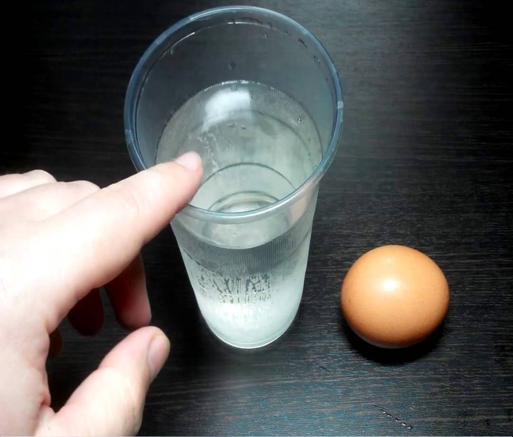

Jajko na twardo

Jajko na twardo to doskonały dodatek do kanapek, sałatek oraz past! Zobacz, w jak prosty sposób możesz je przygotować.
Jajko na twardo
Upewnij się, że skorupka jajka nie jest pęknięta. Następnie do rondelka nalej zimnej wody, dodaj dużą szczyptę soli i używając łyżki, włóż jajko. Od momentu aż woda zacznie się gotować, jajko potrzebuje od 8 do 10 minut. Po tym czasie odlej wrzątek, a jajko przelej szybko zimną wodą, aby zatrzymać proces gotowania.
Idealne jajko na twardo gotowe!